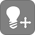
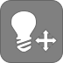

Passeggiando per Pisa, è impossibile non notare lo stemma della città. Esso, infatti, decora alcune statue, qualche lungarno e, talvolta, persino le strade!
Ma qual è la sua origine?
Il primo simbolo pisano fu l'aquila imperiale, nera su fondo oro. Solo successivamente, nel 1017, papa Benedetto VIII concesse lo stemma della croce, in occasione della battaglia con i Saraceni in Sardegna. In epoca comunale, fu aggiunto, poi, lo stendardo rosso, simbolo della bandiera imperiale. La composizione finale fu approvata da papa Callisto II.
Alcune leggende, sottolineano il legame religioso, affermendo che, le dodici palle intorno alla croce rappresentano i dodici apostoli.
La più antica raffigurazione dello stemma presente nelle mura urbane risale al 1156.
Osserviamo lo stemma più da vicino, prendendo in esame il bassorilievo, situato nella Cattedrale di Pisa.
Il bassorilievo è situato in possimità del transetto destro della Cattedrale di Pisa, occupato dalla Cappella di San Ranieri.
Attualmente la zona non è visitabile al pubblico e per questo motivo si è scelto di riprodurne uno degli elementi decorativi più importanti.


 



Per la realizzazione del modello 3D del bassorilievo sono stati seguiti i seguenti step:

Classe '97, appassionata di teatro, cinema, letteratura, musica ed arte.
È probabile trovarla con una chitarra tra le braccia o con una matita in mano.
Attratta fin da bambina dalla tecnologia, decide di conciliare le sue passioni iscrivendosi a Informatica Umanistica.